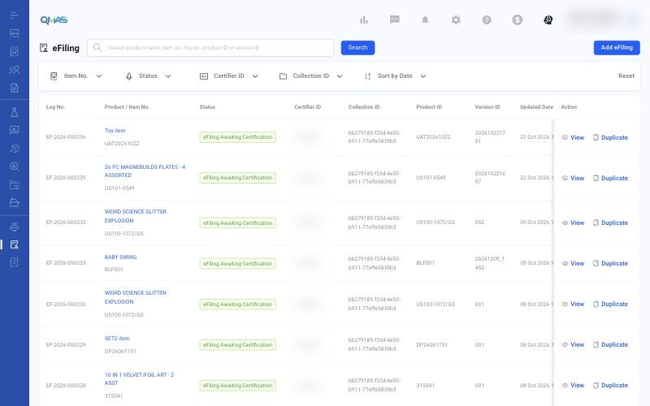
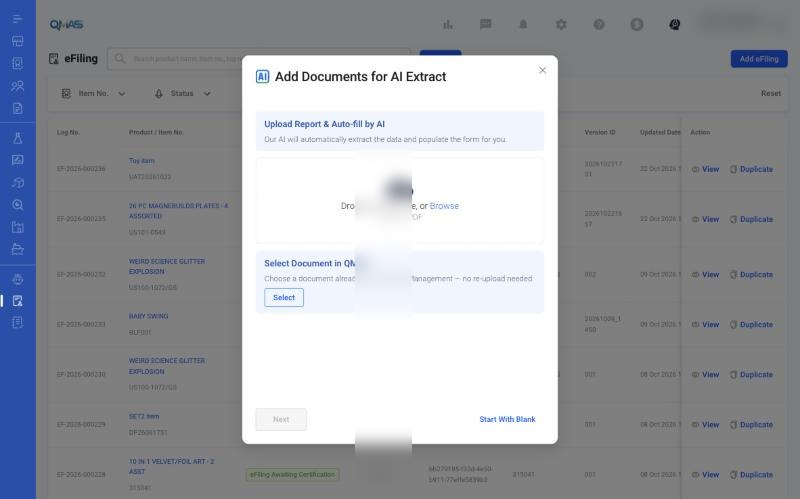
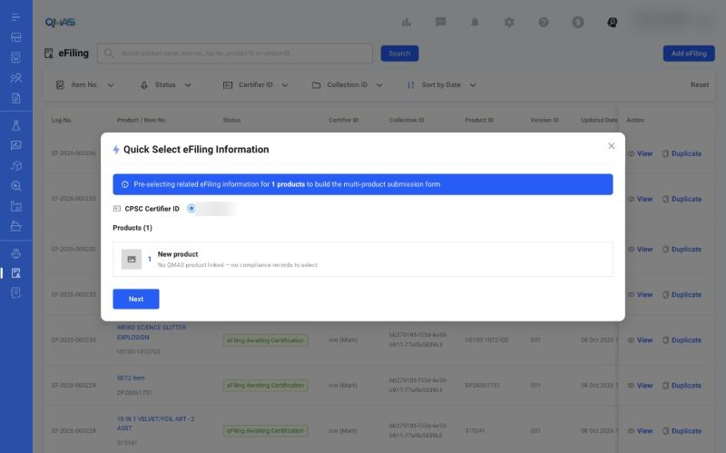
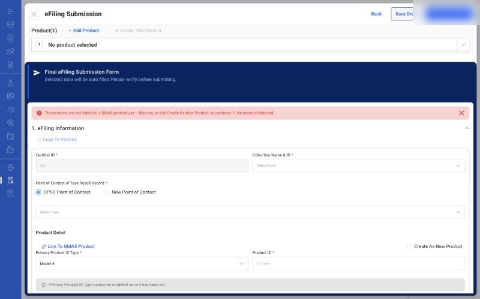

eFiling — Submit eFiling to CPSC
Create and submit CPSC eFiling certificates for your products, with AI that can fill the form from your test report.
Overview
- Make sure your CPSC Certifier ID is set up in Company Profile.
- Open eFiling and click Add eFiling.
- Upload a report for AI Extract, select a document already in QMAS, or Start With Blank.
- In Quick Select eFiling Information, check the Certifier ID and products, then click Next.
- Complete the eFiling Submission form, then Save Draft or Preview to Submit.
Step-by-step
1. Open eFiling
In the left menu, open eFiling. The list shows each eFiling with its log no., product, status, certifier ID, collection ID, product ID and version ID. Use View to open one or Duplicate to start a new version from it. Click Add eFiling.

2. Add documents for AI Extract
- Upload Report & Auto-fill by AI: drop a PDF test report. AI extracts the data and fills the form.
- Select Document in QMAS: choose a document already in Document Management, with no re-upload.
- Start With Blank: fill the form yourself.

3. Quick Select eFiling Information
Choose the CPSC Certifier ID and check the products to include. Click Next.

4. eFiling Submission form
Fill in eFiling Information (Certifier ID, collection, point of contact) and Product Detail. Use Link To QMAS Product to connect the form to a product, or tick Create As New Product. Use + Add Product at the top for a multi-product submission.
Then complete the remaining sections (lab, citations and exclusions). Click Save Draft to finish later, or Preview to Submit to check and send to CPSC.

If you close the form without saving, QMAS asks you to confirm. Unsaved values are lost. Saved drafts stay in the eFiling list.
Tips
FAQ
- How do I submit eFiling to CPSC?
- Go to eFiling (https://qmas.icw.io/efiling), click Add eFiling, upload a report for AI Extract or Start With Blank, check the Quick Select information, complete the eFiling Submission form, then Preview to Submit.
- Where do I set up my CPSC API key?
- Settings (gear icon) → Company Profile → CPSC eFiling - Certifier ID.
- Can AI fill in the eFiling form?
- Yes. In Add eFiling, upload a PDF report under Upload Report & Auto-fill by AI.